LIGHT 16:1 / YOUR PRINTED BENCH KIT
Assemble the gear train, escapement and pendulum
28 printed pieces from 25 STL files, one M3 x16 screw and one M3 nut. Download the illustrated PDF for numbered callouts, diagrams and the spacer reference.
Front is the pendulum side. Rear is the side with the heads of pivots 13 and 19. Remove brims and obvious shaft burrs; preserve tooth tips and pallet faces.
01. Build the rear support
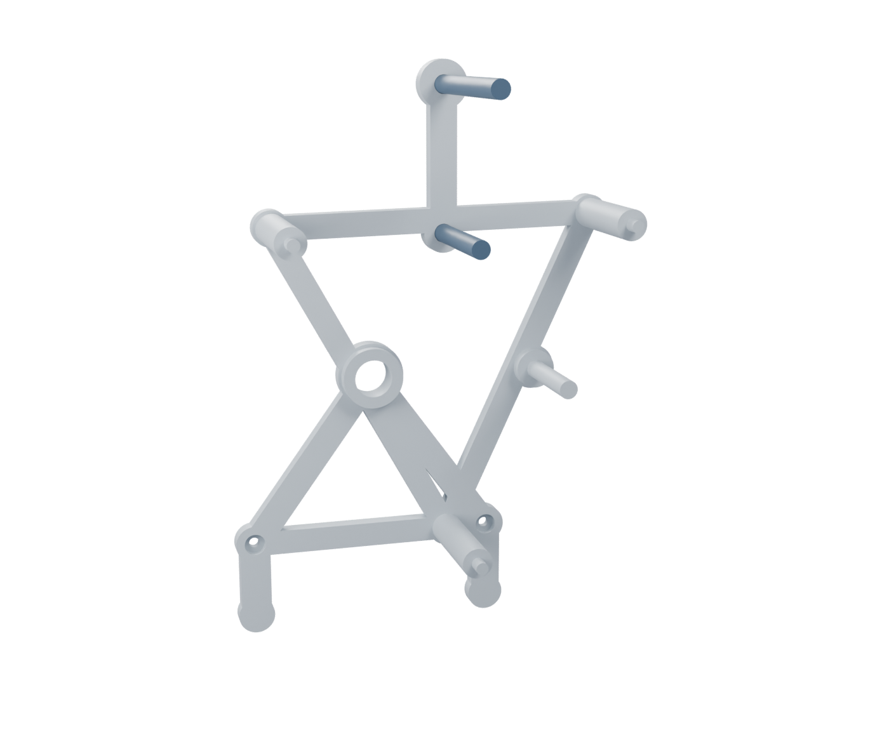
Looking from the gear / pendulum side. B is already printed into frame 05.05_rear_carrier.stl07_carrier_post.stl x313_gear_pivot.stl19_anchor_pivot.stl
- Hold rear frame 05 with its long built-in B pin pointing toward you. The two small bowl screw holes are at the bottom; leave them empty.
- Insert short pivot 13 through hole C and long pivot 19 through the top hole P, both from behind. Their flat heads stay behind frame 05.
- Insert the three posts 07 into the three small corner holes shown. Their thick shoulders sit against the gear-side face of 05.
Check: 13 is 49 mm overall; 19 is 67 mm. Use all three 47 mm carrier posts. Set front frame 06 aside.
02. Fit the square shaft and rear sleeve
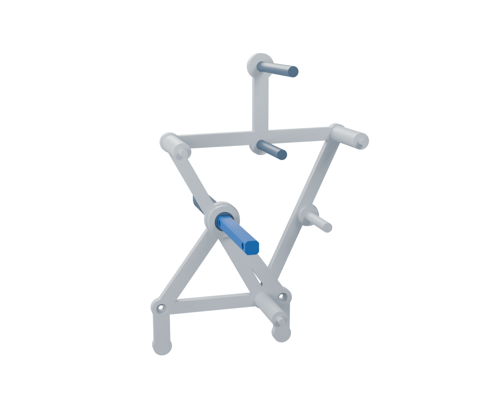
The long round sleeve passes through the rear frame bearing.03_main_shaft.stl36_rear_round_journal.stl
- Identify the rear end of shaft 03: the middle cross-hole is 81 mm from it, and 59 mm from the other end. Mark the rear end temporarily.
- Slide long round sleeve 36 onto the square shaft. Feed the sleeved shaft through the large A hole of frame 05 from behind.
- Set the front end of sleeve 36 flush with the front face of the raised collar on 05. Hold it there while adding the next parts.
Shaft holes from rear end: 5 mm, 81 mm, 135 mm. Overall length: 140 mm.
Check: the 66.6 mm sleeve provides the round bearing surface. The bare square shaft should not rub directly in the frame hole.
03. Add the orange input gear
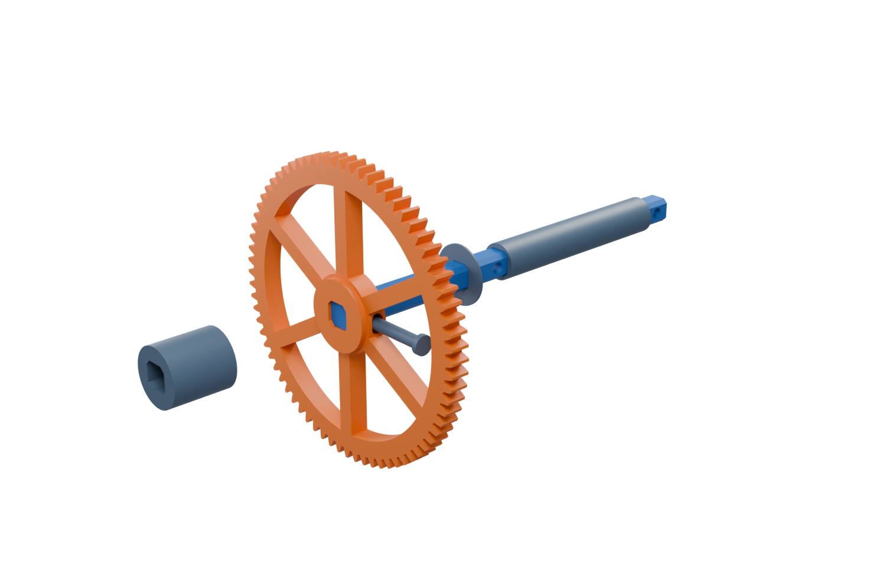
Exploded detail: parts are spread apart along the shaft. Frame omitted here.35_main_rear_thrust_washer.stl10_drive_72.stl04_main_crosspin.stl34_main_front_thrust_sleeve.stl
- From the front, slide thin washer 35 onto the square shaft, against the rear collar. This is the very thin 0.6 mm washer.
- Slide drive gear 10 on with its taller central hub facing forward. Align its cross-slot with the shaft hole 81 mm from the rear end.
- Push crosspin 04 through the hub and shaft. Then add the larger keyed sleeve 34 in front of the gear. Its length is 19.2 mm.
Rear to front: 05 rear collar → 35 0.6 mm washer → 10 + 04 gear + pin → 34 19.2 mm sleeve
Check: gear 10 and shaft 03 turn together. The square socket transmits torque; a little tangential play in the retaining pin slot is intentional.
04. Fit the green compound gear
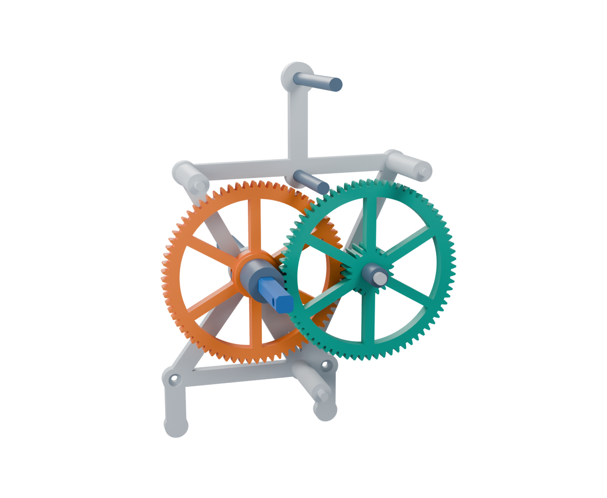
The green wheel sits farther forward than the orange wheel.11_compound_18_72.stl15_B_front_spacer.stl
- Slide compound gear 11 onto the built-in B pivot of rear frame 05.
- Point its projecting small pinion toward the rear frame. Its large 72-tooth wheel faces forward. The small pinion meshes with orange gear 10.
- Slide spacer 15, length 11.4 mm, onto the B pivot in front of gear 11.
Rear to front: 05 / B integral pivot → 11 pinion rearward → 15 11.4 mm spacer
Check: turn the gears gently while supporting the loose shafts. The large green wheel should clear the orange wheel rather than mesh with it.
05. Fit the yellow escape compound
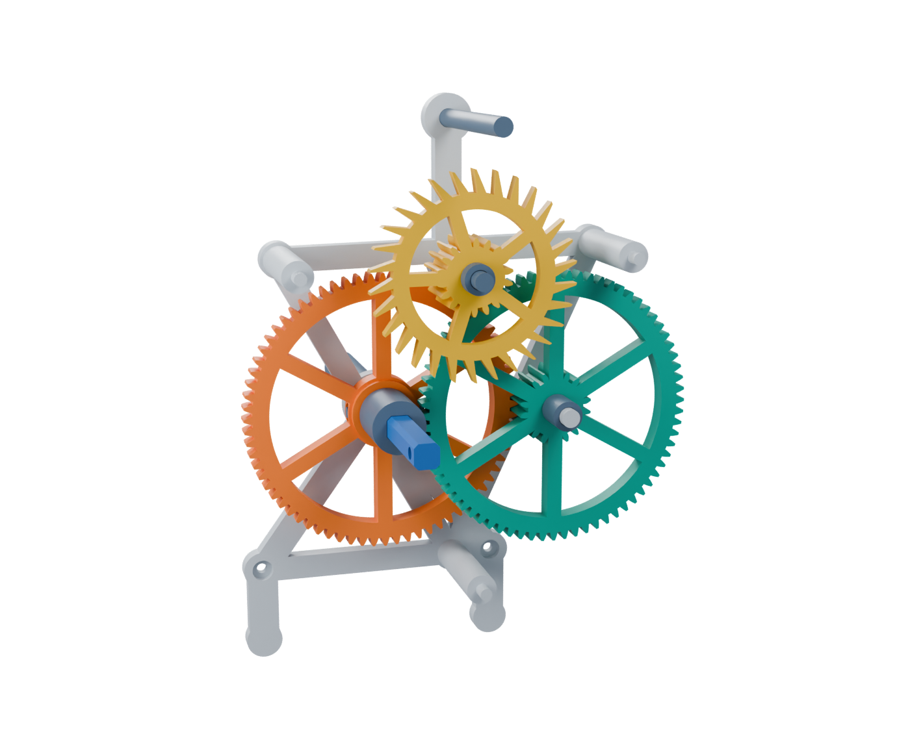
The yellow small pinion engages the large green wheel.16_C_rear_spacer.stl12_escape_compound.stl17_C_front_spacer.stl
- On pivot 13 at C, slide on rear spacer 16, length 14.4 mm. It rests against frame 05.
- Add escape compound 12: its projecting small pinion points rearward, and its large pointed escape wheel faces forward. Turn gently to engage the green wheel.
- Add front spacer 17, length 4.4 mm. Before fitting the anchor, check that both gear meshes turn without a hard spot.
Rear to front: 05 rear frame → 16 14.4 mm → 12 pinion rearward → 17 4.4 mm
Check: 16 is the long spacer behind the yellow gear; 17 is the short spacer in front. Do not press on the pointed tooth tips.
06. Place the pallet anchor
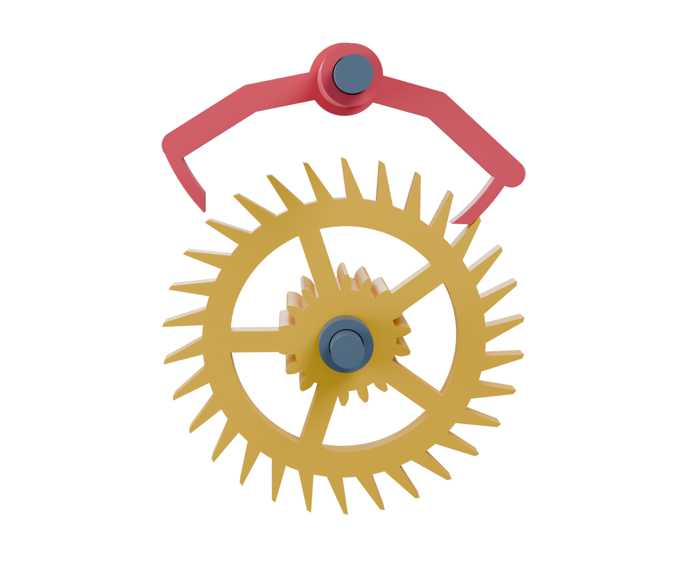
Isolated escapement detail. Rear frame and other gears omitted for clarity.20_anchor_rear_spacer.stl18_pallet_anchor.stl
- On long top pivot 19, slide rear spacer 20 against frame 05. This narrow spacer is 27.4 mm long.
- Slide anchor 18 onto that pivot with its two pallet arms pointing down toward the escape wheel. Its long round sleeve points forward.
- Ease the pallets around the upper teeth of wheel 12, rotating the wheel a little if necessary. The pallet faces and escape wheel occupy the same front-to-back plane.
Rear to front: 05 rear frame → 20 27.4 mm spacer → 18 arms at wheel → sleeve points forward
Check: the anchor pivots freely on 19. Preserve the little working faces and tooth tips; do not force the wheel past a locked pallet.
07. Close the two frames
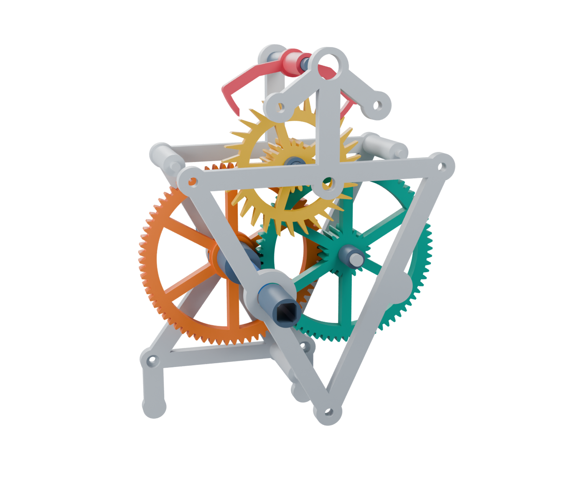
Front frame and front sleeve are shown pulled forward before seating.06_front_carrier.stl37_front_round_journal.stl
- Orient front frame 06 with its raised main collar and blind B bearing seat facing rearward, toward the gears.
- Bring it onto all three posts 07. Guide B's built-in pin into its blind seat, C pivot 13 into its hole, and the anchor's round sleeve through the large top opening.
- Seat the frame gently. Slide short round sleeve 37 over the front of the square shaft and into the A bearing. Its rear end should be flush with the rear face of the front frame collar.
Check: sleeves 36 and 37 turn with the shaft. Keep a little axial play in the gears. If closure makes anything stiff, reopen and check the spacer order.
08. Clamp the pendulum to the anchor
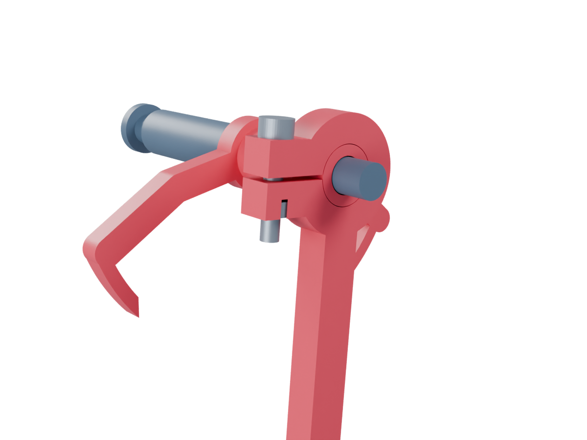
Close-up of the anchor sleeve and split pendulum clamp. Rod continues below.- Slide the split clamp of pendulum 24 over the anchor's protruding round sleeve, ahead of front frame 06. The rod points downward.
- Place one plain M3 nut in the hexagonal recess of the clamp ear. Insert an M3 x16 screw through the opposite ear and start it into the nut.
- Set the front face of the clamp approximately flush with the end of the anchor sleeve. Tighten only enough to hold it provisionally; you will adjust its angle during the test.
Check: the pendulum clamps to the rotating anchor sleeve, not to the stationary 6 mm pivot. Keep the clamp clear of frame 06.
09. Fit the open bob
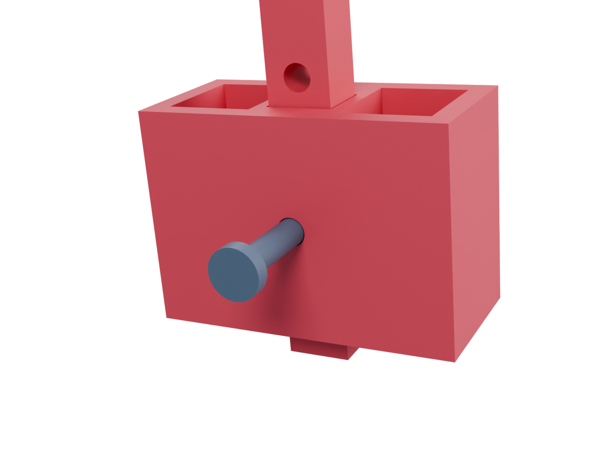
Rear close-up of the bob; its pin is pulled back before insertion.25_open_pendulum_bob.stl26_bob_pin.stl
- Slide open bob 25 onto the bottom of the pendulum rod with its two open pockets facing upward.
- Align its hole with the 150 mm rod hole: the fourth hole from the pivot, or the second hole from the free end.
- Insert bob pin 26. Keep the bob empty until the assembled frame is supported upright; then put 15-20 g total of iron into its two pockets.
Holes from pivot: 135, 140, 145, 150, 155 mm. Use the second hole from the free end.
Check: the bob pin passes through the rod and bob. Split the iron approximately evenly between the two pockets; this is the only ballast used in this bench test.
10. Support the front of the anchor pivot
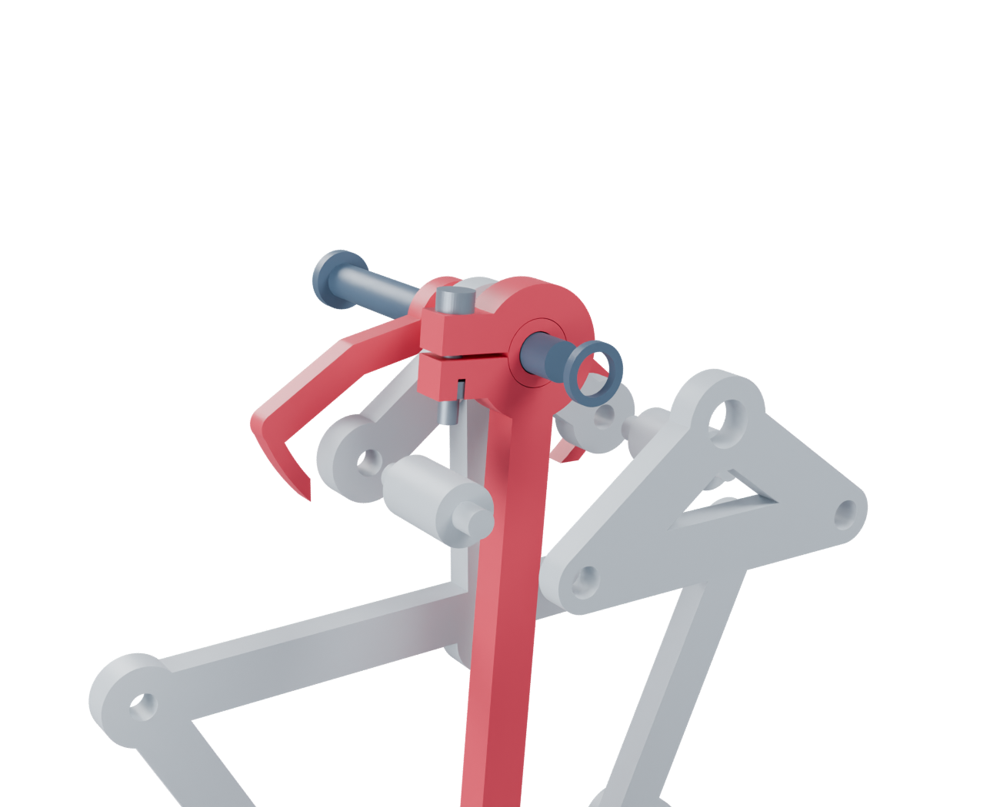
Exploded close-up: washer, two bridge posts and bridge are pulled forward.21_anchor_front_washer.stl23_bridge_post.stl x222_anchor_bridge.stl
- Slide thin washer 21, thickness 1.4 mm, over the exposed end of pivot 19, just in front of the pendulum clamp and anchor sleeve.
- Fit both short bridge posts 23 into the two small holes beside the top of front frame 06. Each post is 23 mm overall.
- Fit bridge 22 onto the posts while guiding pivot 19 into its central hole. Seat all three locations together without bending the pivot.
Rear to front: 18 + 24 sleeve + clamp → 21 1.4 mm washer → 22 front bridge
Check: the anchor pivot is now supported at both ends. The anchor and pendulum must turn freely with slight endplay; the bridge must not squeeze the clamp.
11. Support and test
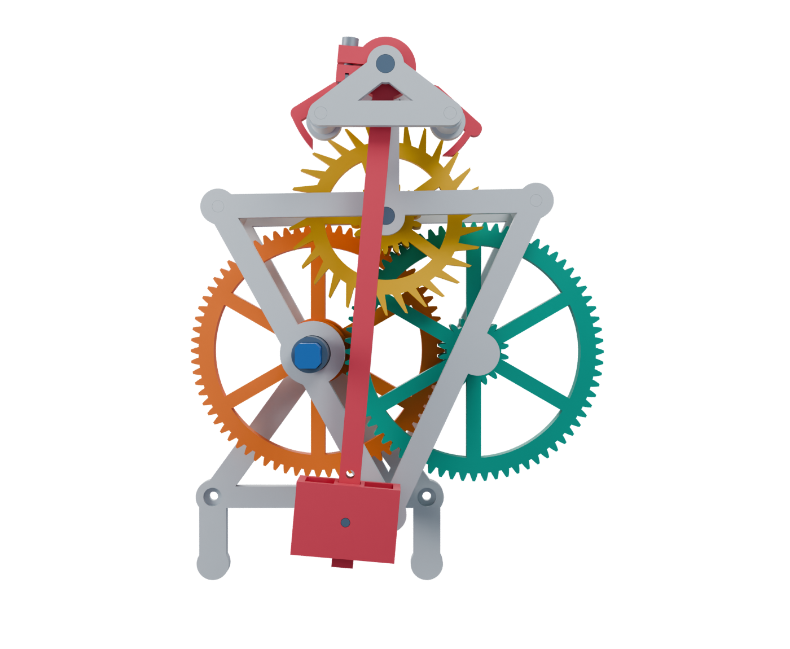
- Support the fixed frame upright with a padded clamp or blocks, leaving the pendulum and both gear faces free. Avoid squeezing the bearing areas.
- Without drum wheels, sleeves 36 and 37 can slide outward. Keep them seated. Small removable tape collars on the exposed shaft just outside their outer ends can retain them; keep tape away from the frame bearings.
- Add 15-20 g to the bob. Apply very light counterclockwise torque to orange gear 10, viewed from the pendulum side. Move the pendulum gently, initially about 5 degrees each side.
- Look for release, then a definite stop on the opposite pallet on each half-swing. Adjust the pendulum clamp angle until release occurs at similar excursions either side of vertical; retighten lightly.
From the pendulum side: orange and yellow turn counterclockwise, green clockwise. This corrects the earlier clockwise instruction for this front view. Stop if it binds or skips; inspect before adding force.